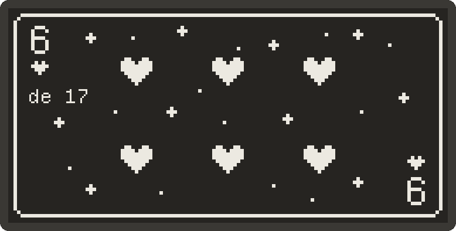

charm
Un poema al azar en una pantalla de tinta electrónica. Esta página instala su firmware en una placa Heltec Vision Master E213 desde el navegador, sin instalar nada.

Necesitas
- una placa Heltec Vision Master E213 (ESP32-S3 con pantalla e-ink de 2.13");
- un cable USB-C de datos, no uno de solo carga;
- Chrome o Edge en un ordenador. Safari, Firefox y los móviles no pueden hablar con el puerto serie.
Instalar
instalar el charm deja la placa lista, con tres poemas de ejemplo y una dedicatoria para probar. solo firmware actualiza el programa y no toca los poemas que ya estén dentro.
- Conecta la placa al ordenador con el cable USB-C.
- Pulsa el botón de arriba y elige el puerto que aparezca (suele poner
usbmodemoCOM). - Elige Install y espera un par de minutos sin desconectar el cable.
- Al terminar, la pantalla muestra la carta de as. Mantén pulsado el botón más cercano al USB y saldrá un poema.
Si no aparece ningún puerto
- Prueba otro cable: muchos cables USB-C solo llevan corriente.
- La placa puede estar dormida. Mantén pulsado BOOT (el botón junto al USB) y toca RST (el del medio); o conecta el cable con BOOT pulsado. Entra en modo de carga y el puerto aparece.
- En Windows, si el puerto sale con un aviso, instala el driver USB del fabricante del cable o prueba otro puerto USB.
Después de instalar
| Botón 1 (junto al USB) | mantener: una carta nueva · tocar: pasar página |
|---|---|
| Botón 2 (el más lejano) | tocar: guardar la carta · mantener: abrir el WiFi |
| Red del charm | amarilla-marin, clave sin-duda, en
http://192.168.4.1 |
Desde esa página se escriben los poemas, se suben imágenes, se cambia el nombre y se deja una dedicatoria, que será la carta de as.
Desde la terminal
Si prefieres no usar el navegador, con esptool instalado:
esptool --chip esp32s3 write-flash -z \
0x0 firmware/bootloader.bin 0x8000 firmware/partitions.bin \
0xe000 firmware/boot_app0.bin 0x10000 firmware/charm.bin \
0x670000 firmware/littlefs.bin